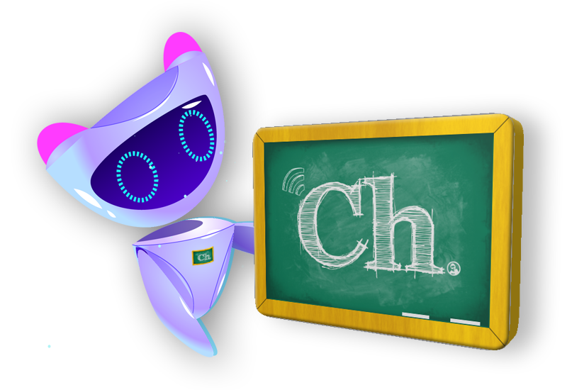

404
Error 404 - Ooopsss! - Una de dos. O llegaste a una dirección que no existe o estas intentando acceder a un sitio no permitido. Si estas perdido, ve a la página de inicio dando
click aquí.
Chalkboard Learning Platform es un proyecto creado por el profesor Christian SerranoBogotá - 2020